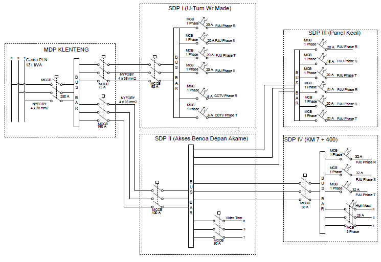
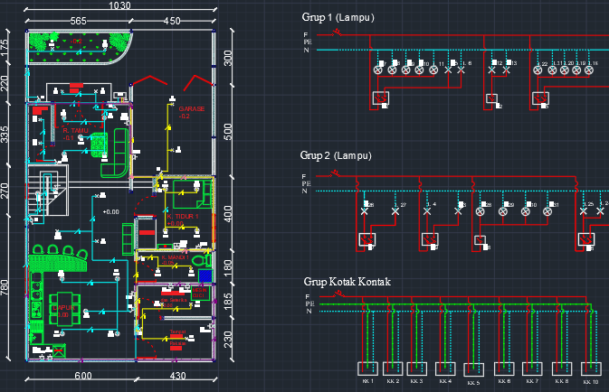
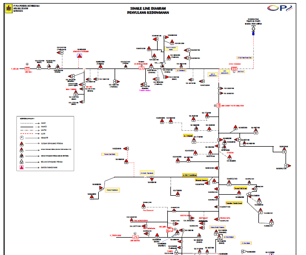
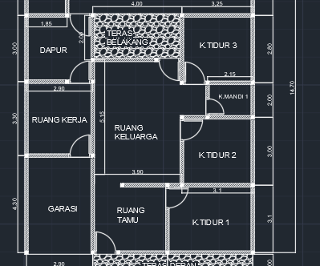

Hi! I'm Aditya Pratama, I'm an freshgraduate from electrical engineer.
Welcome to my professional portofolio website. In my project, I have designed 2D electrical wiring using AutoCad
My Project

The wiring diagram design of electrical light street at PT. Jasamarga Bali Tol
The wiring diagram designed when I did internship at PT. Jasamarga Bali Tol in 2021 ago, this wiring diagram represented the electrical system of the street lighting and toll gates PT. Jasamarga Bali Tol. The wiring diagram I created by Autocad application.

The electrical wiring diagram design of the 2nd floor house
I made a 2D electrical wiring diagram for a 2 floor house, In the grouping of electrical parts such as electric socket, lights, air conditioners, water pumps and also calculate the energy consumption of all electrical parts

The single line diagram feeders of PT. PLN persero Region Kuta
The single line diagram represents one of the feeders at PT. PLN Kuta area, there are 30 feeders in Kuta area. In one line feeder there are transformers, power cables, power poles, load break switches, and reclosers. This single line was created using Autocad, Excel, and Etap applications.

2D house design
This 2D residential design is a lecture assignment given by the lecturer while I was studying on campus. the next stage of this task I made the electrical wiring and calculated the energy consumption of all electricity for this house.
My Profil
My name is Aditya Pratama, I graduated from the Department of Electrical Engineering, Faculty of Engineering, Udayana University in 2021. I am interested in the design electricity power systems, electronics, and programming. I develop my skills by learing from youtube and practice with some projects or lectures collaborating project. I have succeeded in making related designs using AutoCad application, such as the electrical wiring diagram of the house, the wiring diagram of the street lighting, and the single line diagram feeders of PT. PLN region Kuta.
Find Me
If you are interested about the electrical engineering 2D/3D design using AutoCad, or related fields that fits with my skill, I would love to discuss it and you can reach me on:
.png){kind=link}
{kind=link}
{kind=link}
{kind=link}